人社大事記
人社五十：過去與未來
1980年代創院奠基與人文學門重建
- 1980
- 中國語文學系成立
- 1982
- 外國語文學系成立
- 1984
- 經濟系成立
- 同年8月1日人文社會學院成立
- 1985
- 歷史研究所成立
- 1986
- 語言學研究所成立
- 1987
- 社會人類學研究所成立
- 人文社會館開始規劃與興建（人社院現址）
- 1989
- 文學所成立
- 兩性與社會研究室成立（後更名為性別與社會研究中心）
1984年，清華大學人文社會學院於今台達館舊址正式成立，在首任院長李亦園院士堅持下，學院以「人文社會」命名，確立人文與社會科學並重的辦學理念，使清華人社院成為理工背景大學發展人文學科的重要典範。
人社院此階段重點在建立院級教學與研究平台，逐步形成獨立的研究與人才培育體系。此時的院務發展首先強調學術卓越、高品質教學與優質研究環境的建立，同時結合與社區、科學園區及產業互動的需求，逐步形成「在地連結、全球視野」的基本方向。1987年人文社會館開始規劃與興建，逐步完善人文社會學院的學術面向。
1990年代館舍落成與制度專業化
- 1990
- 人文社會館正式落成
- 1992
- 亞太/文化研究中心成立
- 1994
- 哲學研究所成立
- 1995
- 文學研究所轉入中文、外語二系
- 1998
- 社會人類學研究所分立為社會所、人類學二所
1990年，由建築師李祖原設計的人文社會館正式落成，提供了完整的教學與研究場域，也宣告人社院由創建走向制度成熟的重要時期。隨著硬體到位，學術與制度也更趨完善。
1995年配合《大學法》修正，文學研究所撤銷，其下的中文與外文組分別併入中國文學系與外語系；同時中國語文學系更名為「中國文學系」，形成垂直整合體系。1998年前後，社會人類學研究所正式分立為社會學研究所與人類學研究所，象徵社會科學研究邁向專業分化與深化。
透過制度設計與資源配置，人社院讓人文學科在清華取得長期穩定的位置，也為後續跨領域整合與教學拓展建立基礎。在學術建制齊備的同時，清華劇場、圓形劇場表演藝術節與人社鐘塔也相繼啟用，使人社院逐步成為校園文化活動的重要場域。
2000年代跨領域轉型與本土研究深化
- 2000
- 蕭啟慶老師獲頒中研院院士
- 2002
- 台灣文學研究所成立
- 人文社會學系成立
- 2004
- 人社院成立二十週年
- 校方頒授李亦園名譽博士學位
- 2005
- 經濟系轉隸科技管理學院
- 2006
- 台灣研究教師在職進修碩士學位班成立
- 黃一農老師獲頒中研院院士
- 2007
- 校級人文社會研究中心成立
- 試辦人文社會學院學士班
邁入21世紀後，人社院核心發展由傳統學科架構轉向「跨域整合」與「本土研究深化」。2002年成立台灣文學研究所碩士班，標誌著學院對臺灣本土文化研究的重視；2006年則成立「台灣研究教師在職進修碩士學位班」，成為院內唯一的在職專班。
2004年適逢人社院成立二十週年，校方頒授李亦園名譽博士學位，以表彰其建院的奠基之功。在推動跨領域教育方面，2002年成立人文社會學系，推動不分系的跨領域學士教育。2007年成立校級「人文社會研究中心」，並試辦「人文社會學院學士班」，為後續大學部制度調整奠定基礎。
2010年代教學改革與國際拓展
- 2010
- 人文社會學系與院學士班整併
- 2011
- 李卓穎老師榮獲國際東亞科技醫學史學會竺可楨獎
- 2012
- 台灣文學研究所增設博士班
- 2013
- 亞際文化研究國際碩士學位學程成立
- 社會所麥寮訪調計畫啟動
- 2014
- 臧振華老師獲頒中研院院士
- 王默人捐贈350萬美元並設立「王默人周安儀文學講座」，為清華人文領域截至當時的最高額捐款
- 2015
- 實作哲學中心成立
- 2016
- 世界南島暨原住民族中心成立
- 2018
- 陳國球老師榮獲玉山學者
- 華文文學研究所碩士班成立
- 2019
- 文論研究中心成立
2010年代是人社院由制度整合走向學術深化與國際拓展的關鍵階段。2010年院學士班整併後，採延後分流與多元學程設計強化跨領域能力的培養，使學生能更適才適性地發展自主學習計畫；2012年台文所博士班成立，則補足高階研究人才培育鏈結，提升本土文學研究的制度完整性。
此時學院也積極回應全球知識體系的重組。亞際文化研究國際碩士學位學程的設立，不再以歐美為單一知識中心，強調亞洲內部歷史經驗與文化互照；社會所麥寮計畫則將地方產業、環境污染與社會結構納入長期研究，展現人文社會研究介入公共議題的能力。文學講座的設立與重要學術榮譽的獲得，也進一步提升院內研究能量與外部資源支持。實作哲學中心、世界南島暨原住民族中心、華文文學研究所碩士班與文論研究中心，則標誌人社院研究版圖持續擴張，建構具在地關懷與國際視野的學術體系。
2020年迄今社會實作與前瞻研究中心發展
- 2022
- 陳國球老師《抒情傳統論與中國文學史》獲「中研院人文及社會科學學術性專書獎」
- 水下考古學暨水下文化資產研究中心成立
- 2023
- 華語文碩士學位學程成立
- 蔡英俊老師榮獲台積電榮譽講座教授
- 顏建富老師《穿梭黑暗大陸：晚清文人對於非洲探險文本的譯介與想像》獲「中研院人文及社會科學學術性專書獎」
- 本校校友暨牧人投資董事長陳筱宇與校友蔡宗國伉儷捐贈六千萬元以供硬體改善及助學
- 2024
- 楊儒賓老師獲頒中研院院士
- 謝宗霖老師榮獲「國際優秀人才」
- 文學館落成，台文所、華文所於此授課
- 2025
- 蔡維天老師榮獲台積電榮譽講座教授
- 與中央研究院、政治大學文學院合辦「東亞與現代世界形成」國際研究生博士學位學程（TIGP）
- 2026
- 首屆「東亞與現代世界形成」國際研究生入學
2020年代以降，面對少子化與疫情後高教環境重組，人社院發展重心轉向跨域研究與社會實踐。除了強調知識培養，更將原本就已重視的社會實踐，進一步與大學社會責任結合，將人文社會知識視為定義生命經驗與科技永續的「觸媒」，培養學生文本閱讀、田野訪查、跨領域洞察及公共參與等能力。
學術布局上，透過Xplorer與火種計畫推動課程革新與共備共授，深化素養導向教學；並與生命科學研究院合作發展醫學人文，將文學、哲學、人類學與社會學導入醫學教育。2022年成立水下考古與水下文資研究中心，並結合世界南島暨原住民族中心，強化跨區域研究能量。2023年增設華語文碩士學程，整合多系所資源與傅爾布萊特基金會合作高階華語人才培育；2025年更與中研院及政大文學院共同籌設「東亞與現代世界形成」國際博士學程，並於2026年正式招生，建立跨機構高階研究人才培育體系。
院方亦積極深化實務合作與教研空間建設，透過iLink計畫、台積電文教基金會與國光劇團等項目，強化產業與文化實踐連結。2024年王默人周安儀文學館落成，提供台文所與華文所教研空間；牧人劇場亦由校友捐款整修，支援展演與課程。另承蒙彭姓校友、陳超乾校友及各界支持，截至2026年出國交換學生獎助計受贈141萬6,880元、安心陪伴基金80萬888元；彭姓校友亦透過彭基金會捐款125萬元支持華語文教學。在各方資源挹注下，人社院得以全面強化學生國際移動、心理支持與專業教學，逐步形成兼具學術深度、跨域研究與公共關懷的完整發展體系。
ARCHIVE
影像紀錄

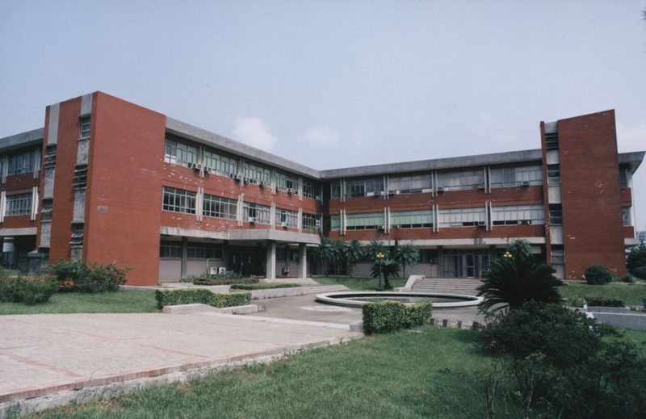

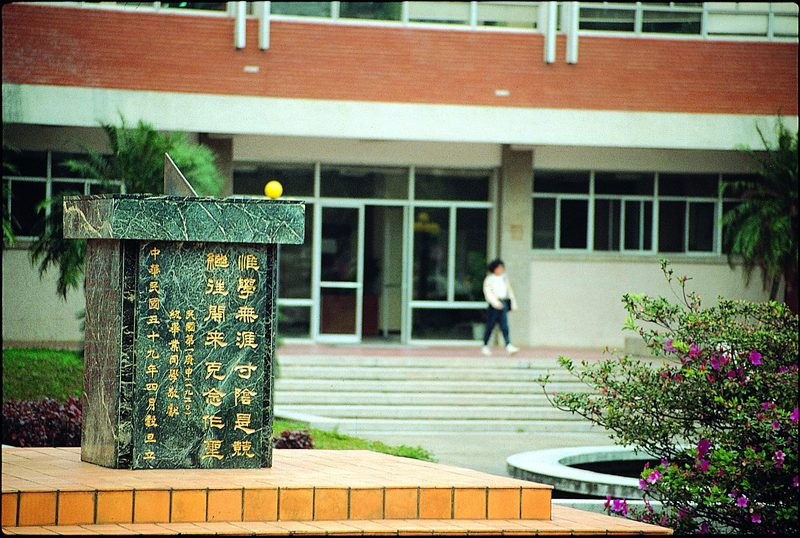

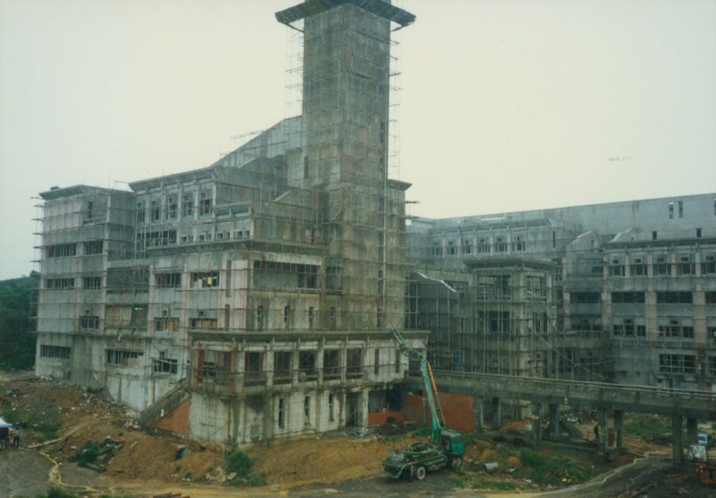

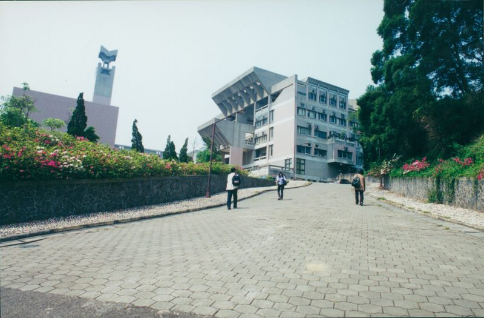

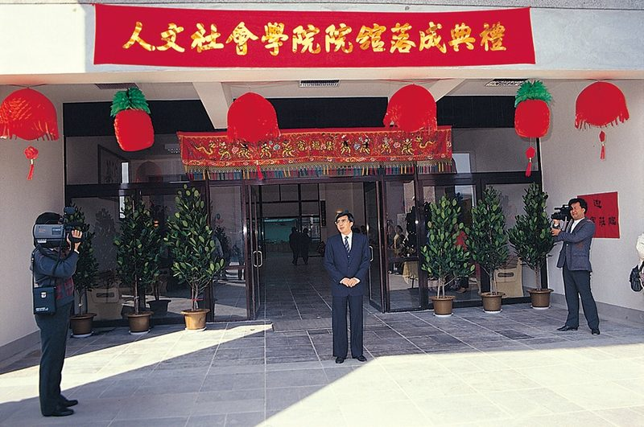

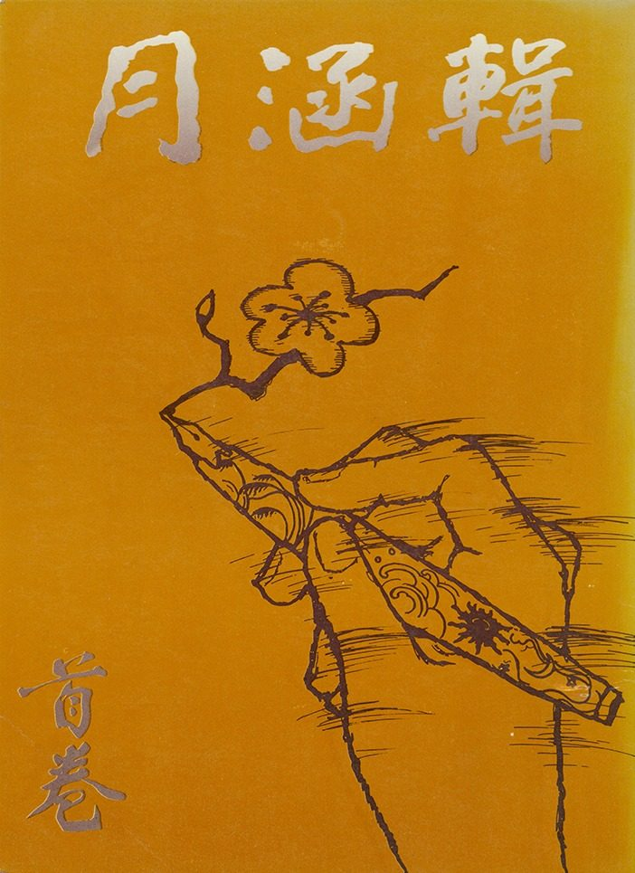

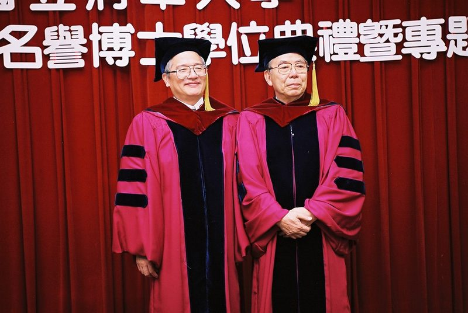

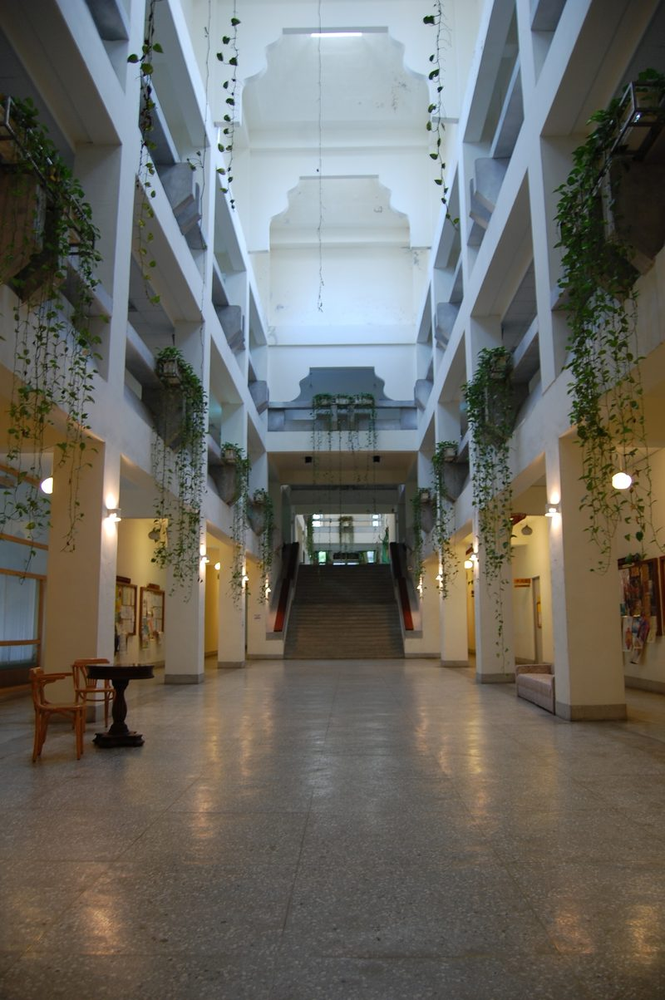

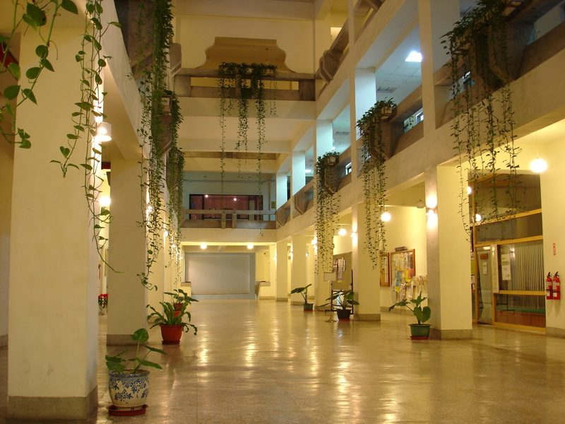

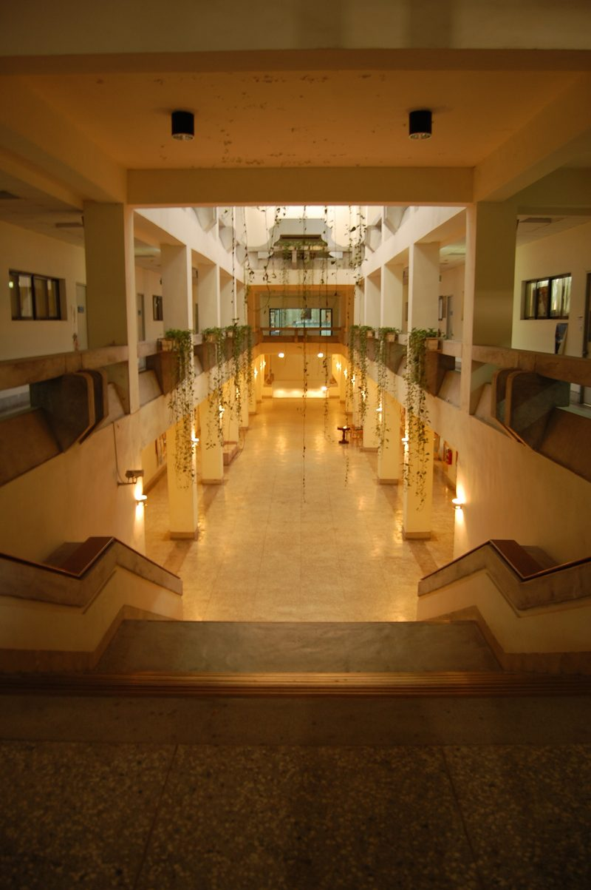

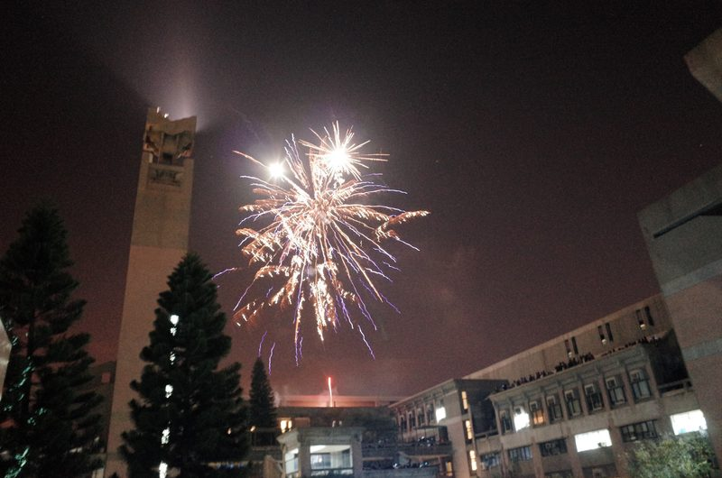

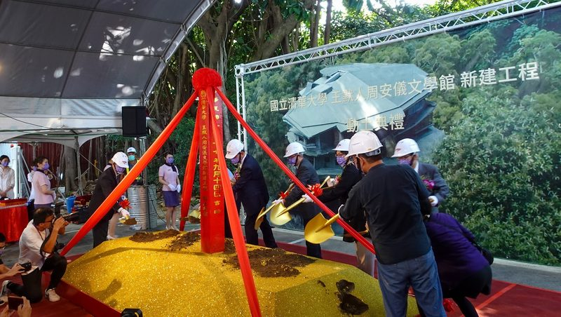